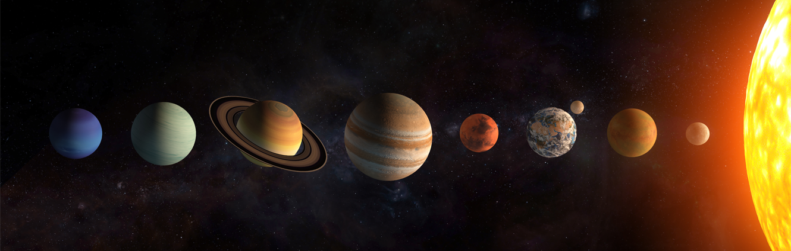

Mercury
Rocky Planet: 1st from the SunThe smallest planet, closest to the Sun. Extreme temperatures with no atmosphere to regulate the heat.
- Distance from Sun
- 57.9 million km
- Length of day
- 59 Earth days
- Moons
- 0
- Temperature range
- -180°C to 430°C
Our Solar System has eight planets, each completely different from the last. Select any planet below to find out more about it.
Click or press Enter on a planet card to read a detailed description.
The smallest planet, closest to the Sun. Extreme temperatures with no atmosphere to regulate the heat.
Earth's twin in size but a world of extremes. The hottest planet due to its thick greenhouse atmosphere.
Our home. The only known planet with life, liquid water on its surface, and a breathable atmosphere.
The Red Planet. Home to the Solar System's tallest volcano and a target for future human exploration.
The largest planet in the Solar System. Famous for its Great Red Spot — a storm bigger than Earth.
Famous for its beautiful ring system made of ice and rock. The least dense planet in our Solar System.
The tilted planet. Uranus rotates almost on its side and has a distinctive blue-green colour from methane gas.
The furthest planet from the Sun. It has the strongest winds in the Solar System despite receiving little sunlight.
